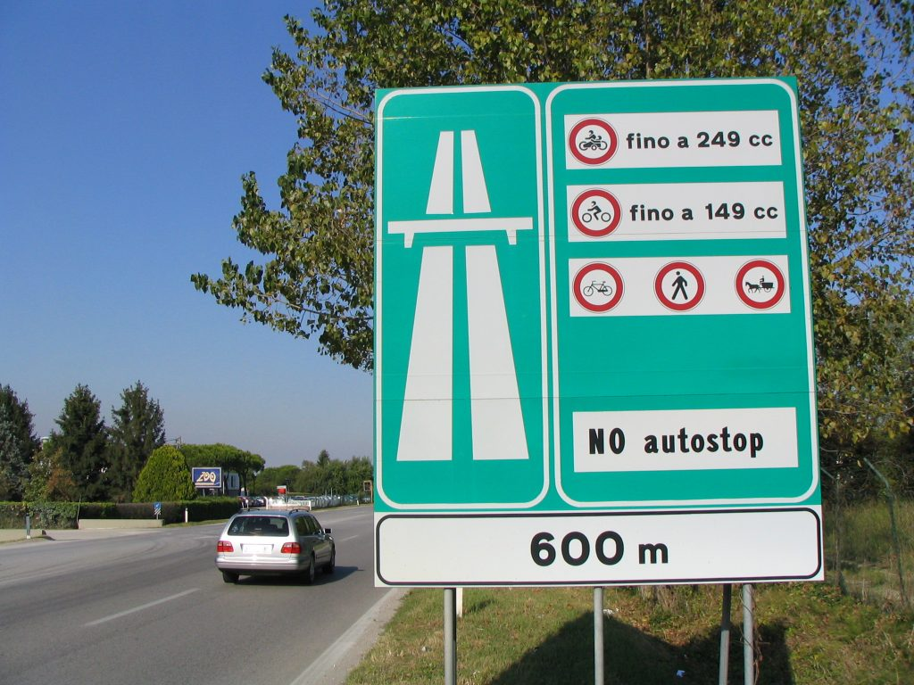
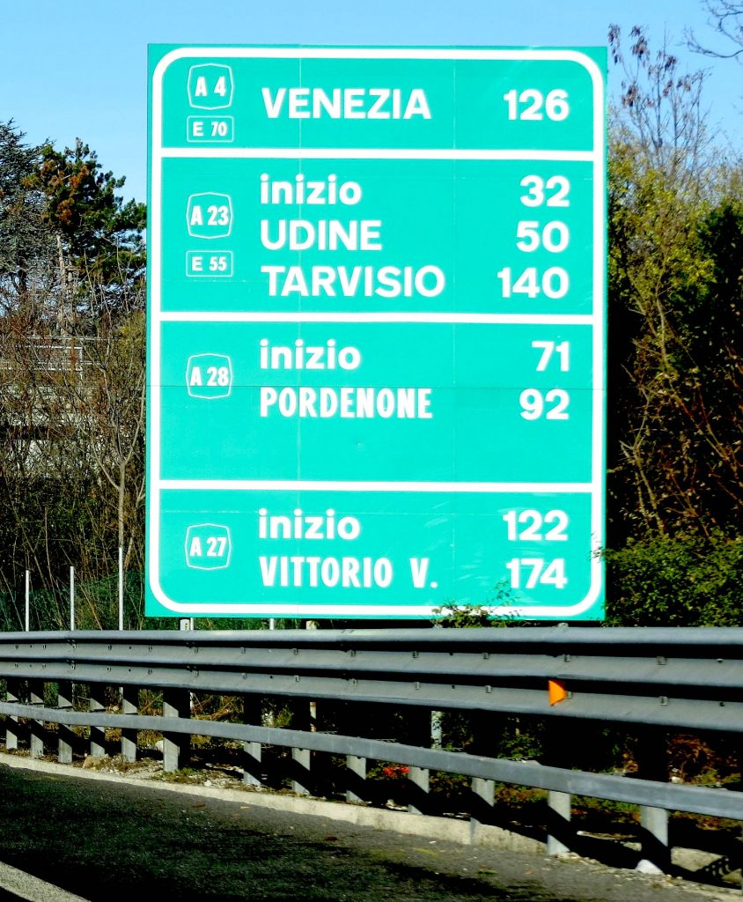
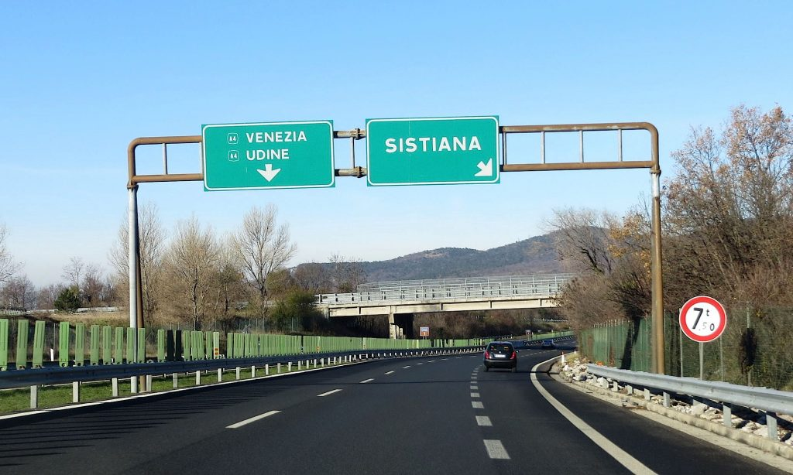

Highway sign showing what is allowed and not allowed on the highway

Highway sign showing distances and highway denominations
Highway exit signs show the name of the city or town in the nearest proximity; they don’t show the exit number as in the US.

Highway exit (Photos by Paolo and Francesca Tosolini)
{This is an excerpt from chapter 2 “Driving in Italy” of the eBook “Italy from the Inside. A native Italian reveals the secrets of traveling in Italy”. To buy our eBook click here}